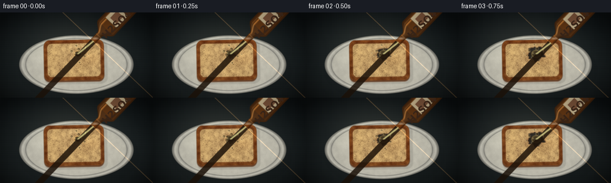
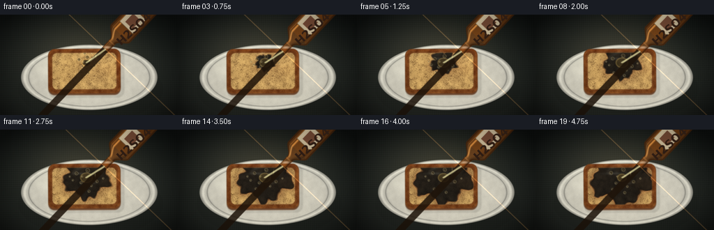
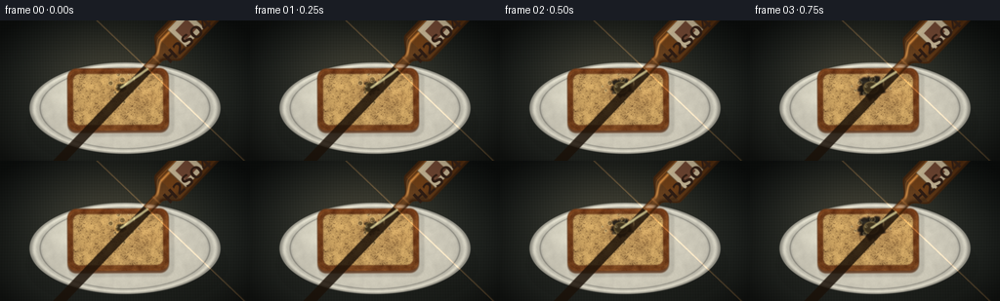
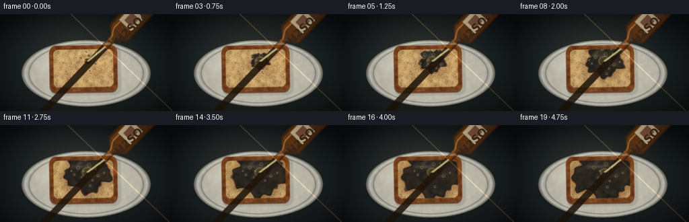
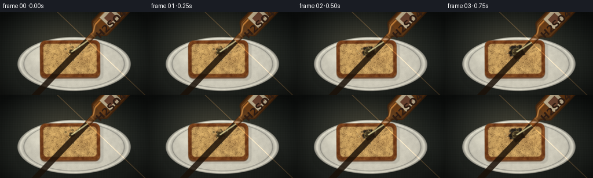
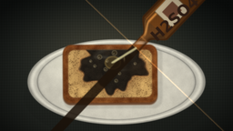
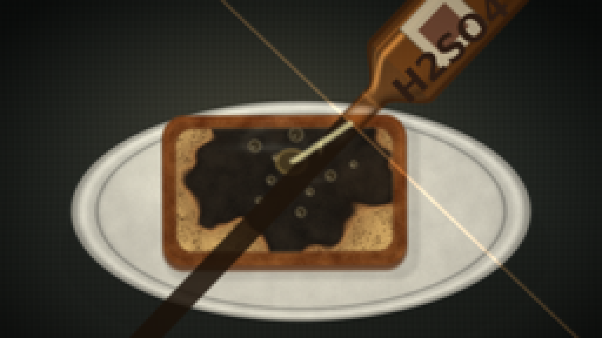

CODING AGENTS AS PIXEL WORLD MODELS
traex/DeepSeek-V4.1-Flash · phygen_151
点击播放 · 原生 RGB 像素
逐轮保存的候选
回放视频、检查图与代码变化。
每份候选均可单独播放。实际图片检查记录在下方工具轨迹中。
候选 01播放与检查图
点击播放 · 原生 RGB 像素


展开代码变化
--- 上一保存版本
+++ 本次保存版本
@@ -0,0 +1,445 @@
+"""Procedural rendering of sulfuric acid reacting with a slice of bread."""
+
+from pathlib import Path
+
+import numpy as np
+from PIL import Image, ImageDraw, ImageFilter, ImageFont
+from scipy.ndimage import gaussian_filter
+
+import artifact_io
+
+
+CASE_DIR = Path(__file__).resolve().parent
+WIDTH, HEIGHT, FRAMES, FPS = 256, 144, 20, 4.0
+SS = 3
+W, H = WIDTH * SS, HEIGHT * SS
+
+
+def smoothstep(a, b, value):
+ t = np.clip((value - a) / (b - a), 0.0, 1.0)
+ return t * t * (3.0 - 2.0 * t)
+
+
+def rounded_box(x, y, cx, cy, half_w, half_h, radius, angle=0.0):
+ ca, sa = np.cos(angle), np.sin(angle)
+ lx = (x - cx) * ca + (y - cy) * sa
+ ly = -(x - cx) * sa + (y - cy) * ca
+ qx = np.abs(lx) - half_w + radius
+ qy = np.abs(ly) - half_h + radius
+ outside = np.sqrt(np.maximum(qx, 0.0) ** 2 + np.maximum(qy, 0.0) ** 2)
+ return outside + np.minimum(np.maximum(qx, qy), 0.0) - radius
+
+
+def ellipse_value(x, y, cx, cy, rx, ry):
+ return ((x - cx) / rx) ** 2 + ((y - cy) / ry) ** 2
+
+
+def blend(image, color, alpha):
+ alpha = np.clip(alpha, 0.0, 1.0)[..., None]
+ return image * (1.0 - alpha) + np.asarray(color, dtype=np.float32) * alpha
+
+
+def add_light(image, color, alpha):
+ alpha = np.clip(alpha, 0.0, 1.0)[..., None]
+ return image + np.asarray(color, dtype=np.float32) * alpha
+
+
+def line_distance(x, y, ax, ay, bx, by):
+ vx, vy = bx - ax, by - ay
+ denom = vx * vx + vy * vy
+ t = np.clip(((x - ax) * vx + (y - ay) * vy) / denom, 0.0, 1.0)
+ return np.hypot(x - (ax + t * vx), y - (ay + t * vy))
+
+
+def load_font(size, bold=True):
+ names = [
+ "/usr/share/fonts/truetype/dejavu/DejaVuSans-Bold.ttf" if bold
+ else "/usr/share/fonts/truetype/dejavu/DejaVuSans.ttf",
+ "/usr/share/fonts/truetype/liberation2/LiberationSans-Bold.ttf",
+ ]
+ for name in names:
+ if Path(name).exists():
+ return ImageFont.truetype(name, size)
+ return ImageFont.load_default()
+
+
+def make_texture(seed, shape, sigma_fine=1.0, sigma_mid=8.0):
+ rng = np.random.default_rng(seed)
+ raw = rng.standard_normal(shape).astype(np.float32)
+ fine = gaussian_filter(raw, sigma_fine)
+ mid = gaussian_filter(raw, sigma_mid)
+ fine /= np.std(fine) + 1e-6
+ mid /= np.std(mid) + 1e-6
+ return fine, mid
+
+
+def render_background(x, y):
+ yy = y / HEIGHT
+ xx = x / WIDTH
+ base = np.zeros((H, W, 3), dtype=np.float32)
+ base[..., 0] = 27 + 10 * yy
+ base[..., 1] = 36 + 9 * yy
+ base[..., 2] = 39 + 7 * yy
+
+ weave = (
+ 0.55 * np.sin(x * 2.25 + np.sin(y * 0.07) * 0.9)
+ + 0.45 * np.sin(y * 2.05 + np.sin(x * 0.025) * 0.7)
+ )
+ broad = np.sin(x * 0.024 + y * 0.006) + 0.6 * np.sin(y * 0.055 - x * 0.011)
+ base += (2.4 * weave + 1.7 * broad)[..., None]
+
+ warm_pool = np.exp(-(((x - 118) / 105) ** 2 + ((y - 53) / 70) ** 2) * 1.5)
+ base += warm_pool[..., None] * np.array([15, 11, 6], dtype=np.float32)
+
+ vignette = np.clip(
+ 1.0 - 0.60 * (((x - WIDTH * 0.5) / (WIDTH * 0.62)) ** 2
+ + ((y - HEIGHT * 0.53) / (HEIGHT * 0.72)) ** 2),
+ 0.40,
+ 1.0,
+ )
+ return base * vignette[..., None]
+
+
+def render_plate(x, y, fine, mid):
+ image = render_background(x, y)
+
+ shadow = np.exp(-(((x - 132.0) / 98.0) ** 2 + ((y - 98.0) / 53.0) ** 2) * 2.2)
+ shadow *= (ellipse_value(x, y, 132.0, 98.0, 98.0, 53.0) < 1.08)
+ image *= (1.0 - 0.42 * shadow)[..., None]
+
+ e = ellipse_value(x, y, 128.0, 88.0, 96.0, 49.5)
+ plate = e < 1.0
+ rim_soft = smoothstep(1.006, 0.982, e)
+ inner_soft = smoothstep(0.765, 0.730, e)
+
+ plate_color = np.empty_like(image)
+ plate_color[..., 0] = 196 + 10 * (y - 58) / 61
+ plate_color[..., 1] = 194 + 9 * (y - 58) / 61
+ plate_color[..., 2] = 181 + 8 * (y - 58) / 61
+ plate_color += (fine * 1.6 + mid * 2.2)[..., None] * np.array([1.0, 1.0, 0.9])
+
+ rim_shade = 0.88 + 0.16 * np.exp(-((e - 0.90) / 0.055) ** 2)
+ plate_color *= rim_shade[..., None]
+ outer_dark = smoothstep(0.86, 1.0, e) * 0.38
+ plate_color *= (1.0 - outer_dark)[..., None]
+ plate_color += np.array([19, 18, 15], dtype=np.float32) * inner_soft[..., None]
+
+ top_light = np.exp(-(((x - 98) / 55) ** 2 + ((y - 57) / 22) ** 2))
+ plate_color += top_light[..., None] * np.array([15, 15, 12], dtype=np.float32)
+ inner_ring = np.exp(-((e - 0.785) / 0.014) ** 2) * 0.25
+ plate_color *= (1.0 - inner_ring)[..., None]
+
+ image = blend(image, plate_color, rim_soft)
+
+ lip = np.exp(-((e - 0.987) / 0.009) ** 2)
+ image = add_light(image, [78, 75, 65], lip * 0.22)
+ edge = np.exp(-((e - 1.008) / 0.010) ** 2)
+ image = blend(image, [70, 73, 70], edge * 0.26)
+
+ plate_reflection = np.exp(-(((x - 82) / 27) ** 2 + ((y - 78) / 7) ** 2))
+ plate_reflection *= plate * 0.15
+ image = add_light(image, [72, 70, 62], plate_reflection)
+ return image, plate
+
+
+def render_bread(x, y, fine, mid):
+ image, plate = render_plate(x, y, fine, mid)
+ angle = -0.018
+
+ outer_d = rounded_box(x, y, 124.0, 80.5, 50.0, 34.0, 9.5, angle)
+ crumb_d = rounded_box(x, y, 124.0, 80.5, 44.5, 28.2, 7.2, angle)
+ bread_mask = smoothstep(1.2, -0.8, outer_d)
+
+ bread_shadow = smoothstep(2.0, -1.0, rounded_box(x, y, 127.0, 84.5, 52.5, 36.0, 10.0, angle))
+ bread_shadow *= (1.0 - 0.52 * smoothstep(-0.5, 1.0, outer_d))
+ image *= (1.0 - 0.20 * bread_shadow)[..., None]
+
+ thickness = smoothstep(1.4, -1.1, rounded_box(x, y, 124.0, 83.0, 50.3, 34.2, 9.5, angle))
+ image = blend(image, [93, 48, 21], thickness * 0.82)
+
+ crumb = smoothstep(1.5, -1.0, crumb_d)
+ crust = np.clip(bread_mask - crumb * 0.86, 0.0, 1.0)
+
+ toast = np.clip(0.50 + 0.24 * mid + 0.10 * fine, 0.0, 1.0)
+ warm = np.clip(0.50 + 0.20 * np.sin(x * 0.105 + y * 0.033), 0.0, 1.0)
+ crumb_color = np.empty_like(image)
+ crumb_color[..., 0] = 205 + 16 * toast - 8 * warm
+ crumb_color[..., 1] = 168 + 18 * toast - 5 * warm
+ crumb_color[..., 2] = 108 + 13 * toast + 3 * warm
+ crumb_color += (fine * 5.0 + mid * 4.0)[..., None] * np.array([1.0, 0.88, 0.62])
+
+ pores = np.clip((-fine - 0.75) * 0.20, 0.0, 0.38)
+ crumb_color *= (1.0 - pores[..., None] * np.array([0.72, 0.80, 0.82]))
+ image = blend(image, crumb_color, crumb)
+
+ crust_color = np.empty_like(image)
+ crust_color[..., 0] = 116 + 10 * mid
+ crust_color[..., 1] = 63 + 8 * mid
+ crust_color[..., 2] = 27 + 4 * mid
+ crust_color += (fine * 3.0)[..., None]
+ image = blend(image, crust_color, crust)
+
+ top_rim = np.exp(-((outer_d + 1.7) / 1.0) ** 2) * bread_mask
+ image = add_light(image, [68, 31, 13], top_rim * 0.24)
+ lower_edge = np.exp(-((outer_d + 2.1) / 1.2) ** 2) * smoothstep(0.35, 0.65, y / HEIGHT)
+ image *= (1.0 - 0.14 * lower_edge)[..., None]
+
+ return image, plate, bread_mask, crumb, crumb_d
+
+
+def render_reaction(image, x, y, bread_mask, crumb, crumb_d, t, fine, mid):
+ impact_x = 130.5
+ impact_y = 70.0
+ dx = x - impact_x
+ dy = (y - impact_y) * 1.13
+ dist = np.hypot(dx, dy)
+ theta = np.arctan2(dy, dx)
+
+ growth = 5.0 + 41.0 * (1.0 - (1.0 - t) ** 1.42)
+ edge_warp = (
+ 1.0
+ + 0.115 * np.sin(5.0 * theta + 0.4)
+ + 0.070 * np.sin(9.0 * theta - 1.5)
+ + 0.040 * np.sin(15.0 * theta + 2.1)
+ + 0.030 * mid
+ )
+ edge = growth * edge_warp
+
+ scorch = smoothstep(edge + 13.0, edge + 1.0, dist) * crumb
+ toast_strength = (0.18 + 0.38 * t) * scorch
+ scorch_color = np.array([92, 55, 30], dtype=np.float32)
+ image = blend(image, scorch_color, toast_strength * 0.58)
+
+ char = smoothstep(edge + 1.7, edge - 2.4, dist) * crumb
+ char_texture = np.clip(0.42 + 0.20 * mid + 0.08 * fine, 0.0, 1.0)
+ char_color = np.empty_like(image)
+ char_color[..., 0] = 24 + 18 * char_texture
+ char_color[..., 1] = 21 + 14 * char_texture
+ char_color[..., 2] = 18 + 10 * char_texture
+ image = blend(image, char_color, char * 0.96)
+
+ rim = np.exp(-((dist - edge) / 1.9) ** 2) * crumb
+ ember = rim * (0.10 + 0.17 * t) * (0.55 + 0.45 * np.sin(theta * 7.0 + 1.0) ** 2)
+ image = add_light(image, [155, 47, 8], ember * 0.55)
+
+ wet_center = smoothstep(edge + 1.0, edge - 9.0, dist) * crumb
+ image = add_light(image, [22, 28, 27], wet_center * 0.24)
+
+ # Broad blue-white sheen makes the carbonized area read as wet rather than matte.
+ sheen = np.exp(-(((x - 121.5) / (13.0 + 4.0 * t)) ** 2
+ + ((y - 62.0) / 2.5) ** 2))
+ sheen *= wet_center
+ image = add_light(image, [91, 104, 102], sheen * (0.23 + 0.08 * t))
+ sheen2 = np.exp(-(((x - 139.0) / 8.0) ** 2 + ((y - 76.0) / 1.4) ** 2))
+ sheen2 *= wet_center
+ image = add_light(image, [65, 72, 66], sheen2 * 0.15)
+
+ # Acid film and meniscus around the still-active impact point.
+ film_r = 6.3 + 2.2 * np.sin(np.pi * t)
+ film = smoothstep(film_r + 1.8, film_r - 1.0,
+ np.hypot(x - impact_x, (y - impact_y) * 1.22)) * crumb
+ image = blend(image, [105, 83, 39], film * (0.34 + 0.11 * t))
+ film_rim = np.exp(-((np.hypot(x - impact_x, (y - impact_y) * 1.22) - film_r) / 1.0) ** 2)
+ image = add_light(image, [173, 143, 72], film_rim * crumb * 0.25)
+
+ bubble_specs = [
+ (-16, -7, 2.4, 0.1), (-9, 8, 1.8, 1.9), (2, -12, 2.8, 3.1),
+ (12, -6, 1.7, 0.8), (17, 6, 2.2, 2.4), (8, 13, 1.5, 4.0),
+ (-22, 4, 1.5, 2.7), (-4, -21, 2.0, 0.3), (22, -12, 1.4, 5.0),
+ (-14, 17, 1.6, 3.5), (4, 22, 1.9, 1.2), (-27, -2, 1.2, 4.7),
+ (27, 1, 1.3, 2.1), (12, -21, 1.2, 5.5), (-7, -2, 1.2, 3.9),
+ ]
+ for index, (ox, oy, radius, phase) in enumerate(bubble_specs):
+ cx = impact_x + ox * (0.62 + 0.38 * growth / 46.0)
+ cy = impact_y + oy * (0.62 + 0.38 * growth / 46.0)
+ pulse = 0.58 + 0.42 * np.sin(2.0 * np.pi * (t * 2.1 + phase))
+ if pulse < 0.22:
+ continue
+ r = radius * (0.82 + 0.18 * pulse)
+ bd = np.hypot(x - cx, y - cy)
+ bubble = smoothstep(r + 0.7, r - 0.7, bd) * crumb
+ ring = np.exp(-((bd - r) / 0.55) ** 2) * crumb
+ image = blend(image, [66, 53, 28], bubble * 0.50)
+ image = add_light(image, [130, 125, 100], ring * 0.30)
+ dot = np.exp(-(((x - cx + r * 0.28) / 0.45) ** 2
+ + ((y - cy - r * 0.28) / 0.45) ** 2))
+ image = add_light(image, [182, 185, 165], dot * crumb * 0.55)
+
+ return image, edge, growth, impact_x, impact_y
+
+
+def render_steam(image, x, y, t, impact_x, impact_y):
+ wisps = [
+ (-16, 0.2, 9.0, 0.20), (-7, 1.8, 13.0, 0.18), (2, 3.2, 17.0, 0.16),
+ (11, 4.3, 10.0, 0.13), (19, 5.1, 15.0, 0.10),
+ ]
+ smoke = np.zeros_like(x, dtype=np.float32)
+ for index, (base_x, phase, height, strength) in enumerate(wisps):
+ y0 = impact_y - 6.0
+ vertical = np.clip((y0 - y) / height, 0.0, 1.0)
+ active = ((y < y0) & (y > y0 - height)).astype(np.float32)
+ center = impact_x + base_x + 4.5 * np.sin(y * 0.24 + phase + t * 2.1)
+ width = 1.7 + 4.0 * vertical
+ plume = np.exp(-((x - center) / width) ** 2) * active
+ plume *= (vertical ** 0.45) * ((1.0 - vertical) ** 0.35)
+ plume *= 0.72 + 0.28 * np.sin(y * 0.44 + t * 3.0 + index)
+ smoke += plume * strength
+ smoke = np.clip(smoke * (0.45 + 0.55 * t), 0.0, 0.34)
+ image = add_light(image, [132, 139, 126], smoke)
+ return image
+
+
+def render_stream(image, x, y, t, mouth_x, mouth_y, impact_x, impact_y):
+ sway = 0.55 * np.sin(t * 7.5)
+ distance = line_distance(x, y, mouth_x, mouth_y, impact_x + sway, impact_y)
+ width = 1.55 + 0.16 * np.sin(y * 0.8 + t * 10.0)
+ stream = smoothstep(width + 0.9, width - 0.55, distance)
+ stream *= smoothstep(impact_y + 1.8, impact_y - 0.5, y)
+ image = blend(image, [181, 177, 125], stream * 0.58)
+
+ highlight_d = np.abs(distance - 0.40)
+ highlight = smoothstep(0.82, 0.18, highlight_d) * stream
+ image = add_light(image, [125, 118, 70], highlight * 0.54)
+ glint = np.exp(-(((x - (mouth_x + impact_x) * 0.5) / 0.8) ** 2
+ + ((y - (mouth_y + impact_y) * 0.5 - 4.0 * np.sin(t * 13)) / 2.5) ** 2))
+ image = add_light(image, [148, 140, 95], glint * 0.32)
+ return image
+
+
+def bottle_width(s):
+ width = np.full_like(s, -1.0)
+ neck = (s >= 0.0) & (s < 16.0)
+ shoulder = (s >= 16.0) & (s < 32.0)
+ body = (s >= 32.0) & (s < 98.0)
+ base = (s >= 98.0) & (s < 105.0)
+ width[neck] = 5.2
+ q = np.clip((s[shoulder] - 16.0) / 16.0, 0.0, 1.0)
+ width[shoulder] = 5.2 + 13.4 * smoothstep(0.0, 1.0, q)
+ width[body] = 18.6
+ qb = np.clip((s[base] - 98.0) / 7.0, 0.0, 1.0)
+ width[base] = 18.6 * np.sqrt(np.maximum(0.0, 1.0 - qb * qb))
+ return width
+
+
+def render_bottle(image, x, y, t):
+ settle = smoothstep(0.0, 0.18, t)
+ mouth_x = 154.0 + 1.8 * (1.0 - settle) + 0.25 * np.sin(t * 4.0)
+ mouth_y = 52.0 - 3.0 * (1.0 - settle) + 0.20 * np.sin(t * 3.3 + 0.6)
+ dx, dy = 0.69, -0.724
+ px, py = -dy, dx
+ rel_x, rel_y = x - mouth_x, y - mouth_y
+ s = rel_x * dx + rel_y * dy
+ p = rel_x * px + rel_y * py
+ width = bottle_width(s)
+ valid = width > 0.0
+ safe_width = np.maximum(width, 0.1)
+ bottle_d = np.where(valid, np.abs(p) - width, 10.0)
+ glass = smoothstep(1.05, -0.65, bottle_d)
+
+ # Soft shadow and refracted rim keep the glass legible over the dark tabletop.
+ image = blend(image, [79, 38, 9], glass * 0.52)
+ edge = np.exp(-((np.abs(p) - safe_width + 1.0) / 1.15) ** 2) * valid
+ image = blend(image, [55, 27, 8], edge * 0.62)
+
+ center_glow = np.exp(-(p / np.maximum(safe_width * 0.92, 1.0)) ** 2) * glass
+ image = add_light(image, [95, 48, 10], center_glow * 0.32)
+
+ liquid = glass * (s > 31.0) * smoothstep(17.5, 15.2, np.abs(p))
+ image = blend(image, [132, 65, 13], liquid * 0.27)
+
+ highlight_1 = np.exp(-((p + safe_width * 0.54) / 1.35) ** 2) * glass
+ highlight_1 *= smoothstep(10.0, 22.0, s) * (s < 101.0)
+ image = add_light(image, [191, 132, 63], highlight_1 * 0.48)
+ highlight_2 = np.exp(-((p + safe_width * 0.73) / 0.55) ** 2) * glass
+ image = add_light(image, [132, 87, 38], highlight_2 * 0.34)
+ inner_dark = np.exp(-((p - safe_width * 0.66) / 2.2) ** 2) * glass
+ image *= (1.0 - 0.18 * inner_dark)[..., None]
+
+ neck_band = np.exp(-((s - 13.5) / 1.0) ** 2) * glass
+ image = add_light(image, [115, 80, 43], neck_band * 0.30)
+ opening = smoothstep(2.8, -0.5, s) * smoothstep(5.8, 4.4, np.abs(p))
+ image = blend(image, [31, 20, 10], opening * 0.86)
+ lip = np.exp(-((s - 0.5) / 0.9) ** 2) * valid
+ image = add_light(image, [172, 113, 54], lip * 0.38)
+
+ label = glass * smoothstep(43.0, 44.5, s) * smoothstep(72.0, 70.5, s)
+ label *= smoothstep(13.4, 12.2, np.abs(p))
+ image = blend(image, [211, 195, 157], label * 0.88)
+ label_edge = (
+ np.exp(-((s - 43.7) / 0.7) ** 2) + np.exp(-((s - 71.3) / 0.7) ** 2)
+ ) * smoothstep(13.7, 12.6, np.abs(p))
+ image = blend(image, [79, 61, 39], label_edge * 0.46)
+
+ hazard = label * smoothstep(48.0, 49.5, s) * smoothstep(66.0, 64.5, s)
+ hazard *= smoothstep(7.7, 6.8, np.abs(p - 0.6))
+ image = blend(image, [91, 43, 23], hazard * 0.70)
+ return image, mouth_x, mouth_y
+
+
+def draw_bottle_text(frame):
+ layer = Image.new("RGBA", (W, H), (0, 0, 0, 0))
+ draw = ImageDraw.Draw(layer)
+ font = load_font(16 * SS, bold=True)
+ text = "H2SO4"
+ box = draw.textbbox((0, 0), text, font=font)
+ tw, th = box[2] - box[0], box[3] - box[1]
+ label = Image.new("RGBA", (tw + 10, th + 12), (0, 0, 0, 0))
+ label_draw = ImageDraw.Draw(label)
+ label_draw.text((5 - box[0], 5 - box[1]), text, font=font, fill=(54, 35, 23, 255))
+ label = label.rotate(43.5, resample=Image.Resampling.BICUBIC, expand=True)
+
+ # Center of the bottle's cream label.
+ cx = int(195.5 * SS)
+ cy = int(20.0 * SS)
+ layer.alpha_composite(label, (cx - label.width // 2, cy - label.height // 2))
+ return Image.alpha_composite(frame.convert("RGBA"), layer).convert("RGB")
+
+
+def render_frame(index):
+ t = index / (FRAMES - 1)
+ yy, xx = np.mgrid[0:H, 0:W].astype(np.float32)
+ x = (xx + 0.5) / SS
+ y = (yy + 0.5) / SS
+
+ fine, mid = make_texture(1701, (H, W), sigma_fine=0.9, sigma_mid=7.0)
+ image, plate, bread_mask, crumb, crumb_d = render_bread(x, y, fine, mid)
+ image, edge, growth, impact_x, impact_y = render_reaction(
+ image, x, y, bread_mask, crumb, crumb_d, t, fine, mid
+ )
+
+ # Animated amber reflection from the bottle onto the plate.
+ reflection = np.exp(-(((x - 157.0) / 23.0) ** 2 + ((y - 78.0) / 10.0) ** 2))
+ reflection *= plate * 0.10
+ image = add_light(image, [74, 42, 14], reflection)
+
+ image, mouth_x, mouth_y = render_bottle(image, x, y, t)
+ image = render_stream(image, x, y, t, mouth_x, mouth_y, impact_x, impact_y)
+ image = render_steam(image, x, y, t, impact_x, impact_y)
+
+ # Fine exposure and vignette pass.
+ vignette = np.clip(
+ 1.0 - 0.33 * (((x - WIDTH * 0.5) / (WIDTH * 0.66)) ** 2
+ + ((y - HEIGHT * 0.52) / (HEIGHT * 0.76)) ** 2),
+ 0.68,
+ 1.0,
+ )
+ image *= vignette[..., None]
+ image = np.clip(image, 0.0, 255.0)
+
+ frame = Image.fromarray(image.astype(np.uint8), mode="RGB")
+ frame = draw_bottle_text(frame)
+ frame = frame.filter(ImageFilter.GaussianBlur(radius=0.22 * SS))
+ frame = frame.resize((WIDTH, HEIGHT), Image.Resampling.LANCZOS)
+ return np.asarray(frame, dtype=np.uint8)
+
+
+def main():
+ frames = np.stack([render_frame(index) for index in range(FRAMES)], axis=0)
+ assert frames.shape == (FRAMES, HEIGHT, WIDTH, 3)
+ assert frames.dtype == np.uint8
+ artifact_io.save(frames, CASE_DIR)
+ print(f"Wrote {FRAMES} frames and video artifacts to {CASE_DIR}")
+
+
+if __name__ == "__main__":
+ main()
候选 02播放与检查图
点击播放 · 原生 RGB 像素

展开代码变化
--- 上一保存版本
+++ 本次保存版本
@@ -77,19 +77,19 @@
yy = y / HEIGHT
xx = x / WIDTH
base = np.zeros((H, W, 3), dtype=np.float32)
- base[..., 0] = 27 + 10 * yy
- base[..., 1] = 36 + 9 * yy
- base[..., 2] = 39 + 7 * yy
+ base[..., 0] = 35 + 14 * yy
+ base[..., 1] = 42 + 12 * yy
+ base[..., 2] = 39 + 9 * yy
weave = (
0.55 * np.sin(x * 2.25 + np.sin(y * 0.07) * 0.9)
+ 0.45 * np.sin(y * 2.05 + np.sin(x * 0.025) * 0.7)
)
broad = np.sin(x * 0.024 + y * 0.006) + 0.6 * np.sin(y * 0.055 - x * 0.011)
- base += (2.4 * weave + 1.7 * broad)[..., None]
+ base += (3.8 * weave + 2.3 * broad)[..., None]
warm_pool = np.exp(-(((x - 118) / 105) ** 2 + ((y - 53) / 70) ** 2) * 1.5)
- base += warm_pool[..., None] * np.array([15, 11, 6], dtype=np.float32)
+ base += warm_pool[..., None] * np.array([24, 17, 9], dtype=np.float32)
vignette = np.clip(
1.0 - 0.60 * (((x - WIDTH * 0.5) / (WIDTH * 0.62)) ** 2
@@ -103,40 +103,40 @@
def render_plate(x, y, fine, mid):
image = render_background(x, y)
- shadow = np.exp(-(((x - 132.0) / 98.0) ** 2 + ((y - 98.0) / 53.0) ** 2) * 2.2)
- shadow *= (ellipse_value(x, y, 132.0, 98.0, 98.0, 53.0) < 1.08)
- image *= (1.0 - 0.42 * shadow)[..., None]
-
- e = ellipse_value(x, y, 128.0, 88.0, 96.0, 49.5)
+ shadow = np.exp(-(((x - 130.0) / 100.0) ** 2 + ((y - 107.0) / 45.0) ** 2) * 2.1)
+ shadow *= (ellipse_value(x, y, 130.0, 107.0, 100.0, 45.0) < 1.08)
+ image *= (1.0 - 0.50 * shadow)[..., None]
+
+ e = ellipse_value(x, y, 128.0, 90.0, 98.0, 47.0)
plate = e < 1.0
rim_soft = smoothstep(1.006, 0.982, e)
inner_soft = smoothstep(0.765, 0.730, e)
plate_color = np.empty_like(image)
- plate_color[..., 0] = 196 + 10 * (y - 58) / 61
- plate_color[..., 1] = 194 + 9 * (y - 58) / 61
- plate_color[..., 2] = 181 + 8 * (y - 58) / 61
+ plate_color[..., 0] = 215 + 11 * (y - 58) / 61
+ plate_color[..., 1] = 212 + 10 * (y - 58) / 61
+ plate_color[..., 2] = 197 + 8 * (y - 58) / 61
plate_color += (fine * 1.6 + mid * 2.2)[..., None] * np.array([1.0, 1.0, 0.9])
- rim_shade = 0.88 + 0.16 * np.exp(-((e - 0.90) / 0.055) ** 2)
+ rim_shade = 0.91 + 0.17 * np.exp(-((e - 0.90) / 0.055) ** 2)
plate_color *= rim_shade[..., None]
- outer_dark = smoothstep(0.86, 1.0, e) * 0.38
+ outer_dark = smoothstep(0.88, 1.0, e) * 0.27
plate_color *= (1.0 - outer_dark)[..., None]
- plate_color += np.array([19, 18, 15], dtype=np.float32) * inner_soft[..., None]
-
- top_light = np.exp(-(((x - 98) / 55) ** 2 + ((y - 57) / 22) ** 2))
- plate_color += top_light[..., None] * np.array([15, 15, 12], dtype=np.float32)
+ plate_color += np.array([14, 13, 11], dtype=np.float32) * inner_soft[..., None]
+
+ top_light = np.exp(-(((x - 94) / 58) ** 2 + ((y - 60) / 22) ** 2))
+ plate_color += top_light[..., None] * np.array([19, 19, 15], dtype=np.float32)
inner_ring = np.exp(-((e - 0.785) / 0.014) ** 2) * 0.25
plate_color *= (1.0 - inner_ring)[..., None]
image = blend(image, plate_color, rim_soft)
lip = np.exp(-((e - 0.987) / 0.009) ** 2)
- image = add_light(image, [78, 75, 65], lip * 0.22)
+ image = add_light(image, [83, 80, 69], lip * 0.20)
edge = np.exp(-((e - 1.008) / 0.010) ** 2)
image = blend(image, [70, 73, 70], edge * 0.26)
- plate_reflection = np.exp(-(((x - 82) / 27) ** 2 + ((y - 78) / 7) ** 2))
+ plate_reflection = np.exp(-(((x - 79) / 30) ** 2 + ((y - 81) / 7) ** 2))
plate_reflection *= plate * 0.15
image = add_light(image, [72, 70, 62], plate_reflection)
return image, plate
@@ -144,31 +144,31 @@
def render_bread(x, y, fine, mid):
image, plate = render_plate(x, y, fine, mid)
- angle = -0.018
-
- outer_d = rounded_box(x, y, 124.0, 80.5, 50.0, 34.0, 9.5, angle)
- crumb_d = rounded_box(x, y, 124.0, 80.5, 44.5, 28.2, 7.2, angle)
+ angle = -0.006
+
+ outer_d = rounded_box(x, y, 121.0, 81.0, 51.5, 31.8, 9.0, angle)
+ crumb_d = rounded_box(x, y, 121.0, 81.0, 46.0, 26.2, 6.8, angle)
bread_mask = smoothstep(1.2, -0.8, outer_d)
- bread_shadow = smoothstep(2.0, -1.0, rounded_box(x, y, 127.0, 84.5, 52.5, 36.0, 10.0, angle))
+ bread_shadow = smoothstep(2.0, -1.0, rounded_box(x, y, 124.0, 85.0, 54.0, 33.8, 9.5, angle))
bread_shadow *= (1.0 - 0.52 * smoothstep(-0.5, 1.0, outer_d))
image *= (1.0 - 0.20 * bread_shadow)[..., None]
- thickness = smoothstep(1.4, -1.1, rounded_box(x, y, 124.0, 83.0, 50.3, 34.2, 9.5, angle))
+ thickness = smoothstep(1.4, -1.1, rounded_box(x, y, 121.0, 83.3, 51.8, 32.0, 9.0, angle))
image = blend(image, [93, 48, 21], thickness * 0.82)
crumb = smoothstep(1.5, -1.0, crumb_d)
crust = np.clip(bread_mask - crumb * 0.86, 0.0, 1.0)
- toast = np.clip(0.50 + 0.24 * mid + 0.10 * fine, 0.0, 1.0)
- warm = np.clip(0.50 + 0.20 * np.sin(x * 0.105 + y * 0.033), 0.0, 1.0)
+ toast = np.clip(0.50 + 0.22 * mid + 0.12 * fine, 0.0, 1.0)
+ warm = np.clip(0.50 + 0.20 * np.sin(x * 0.085 + y * 0.029), 0.0, 1.0)
crumb_color = np.empty_like(image)
- crumb_color[..., 0] = 205 + 16 * toast - 8 * warm
- crumb_color[..., 1] = 168 + 18 * toast - 5 * warm
- crumb_color[..., 2] = 108 + 13 * toast + 3 * warm
+ crumb_color[..., 0] = 201 + 20 * toast - 8 * warm
+ crumb_color[..., 1] = 161 + 20 * toast - 5 * warm
+ crumb_color[..., 2] = 94 + 13 * toast + 3 * warm
crumb_color += (fine * 5.0 + mid * 4.0)[..., None] * np.array([1.0, 0.88, 0.62])
- pores = np.clip((-fine - 0.75) * 0.20, 0.0, 0.38)
+ pores = np.clip((-fine - 0.72) * 0.25, 0.0, 0.46)
crumb_color *= (1.0 - pores[..., None] * np.array([0.72, 0.80, 0.82]))
image = blend(image, crumb_color, crumb)
@@ -188,14 +188,14 @@
def render_reaction(image, x, y, bread_mask, crumb, crumb_d, t, fine, mid):
- impact_x = 130.5
- impact_y = 70.0
+ impact_x = 124.0
+ impact_y = 69.0
dx = x - impact_x
dy = (y - impact_y) * 1.13
dist = np.hypot(dx, dy)
theta = np.arctan2(dy, dx)
- growth = 5.0 + 41.0 * (1.0 - (1.0 - t) ** 1.42)
+ growth = 5.0 + 38.0 * (1.0 - (1.0 - t) ** 1.46)
edge_warp = (
1.0
+ 0.115 * np.sin(5.0 * theta + 0.4)
@@ -213,9 +213,9 @@
char = smoothstep(edge + 1.7, edge - 2.4, dist) * crumb
char_texture = np.clip(0.42 + 0.20 * mid + 0.08 * fine, 0.0, 1.0)
char_color = np.empty_like(image)
- char_color[..., 0] = 24 + 18 * char_texture
- char_color[..., 1] = 21 + 14 * char_texture
- char_color[..., 2] = 18 + 10 * char_texture
+ char_color[..., 0] = 20 + 14 * char_texture
+ char_color[..., 1] = 17 + 11 * char_texture
+ char_color[..., 2] = 14 + 8 * char_texture
image = blend(image, char_color, char * 0.96)
rim = np.exp(-((dist - edge) / 1.9) ** 2) * crumb
@@ -223,14 +223,14 @@
image = add_light(image, [155, 47, 8], ember * 0.55)
wet_center = smoothstep(edge + 1.0, edge - 9.0, dist) * crumb
- image = add_light(image, [22, 28, 27], wet_center * 0.24)
+ image = add_light(image, [18, 23, 22], wet_center * 0.15)
# Broad blue-white sheen makes the carbonized area read as wet rather than matte.
- sheen = np.exp(-(((x - 121.5) / (13.0 + 4.0 * t)) ** 2
- + ((y - 62.0) / 2.5) ** 2))
+ sheen = np.exp(-(((x - 114.0) / (11.0 + 4.0 * t)) ** 2
+ + ((y - 63.0) / 1.8) ** 2))
sheen *= wet_center
- image = add_light(image, [91, 104, 102], sheen * (0.23 + 0.08 * t))
- sheen2 = np.exp(-(((x - 139.0) / 8.0) ** 2 + ((y - 76.0) / 1.4) ** 2))
+ image = add_light(image, [82, 91, 88], sheen * (0.18 + 0.06 * t))
+ sheen2 = np.exp(-(((x - 133.0) / 7.0) ** 2 + ((y - 77.0) / 1.1) ** 2))
sheen2 *= wet_center
image = add_light(image, [65, 72, 66], sheen2 * 0.15)
@@ -292,14 +292,14 @@
def render_stream(image, x, y, t, mouth_x, mouth_y, impact_x, impact_y):
sway = 0.55 * np.sin(t * 7.5)
distance = line_distance(x, y, mouth_x, mouth_y, impact_x + sway, impact_y)
- width = 1.55 + 0.16 * np.sin(y * 0.8 + t * 10.0)
+ width = 1.35 + 0.14 * np.sin(y * 0.8 + t * 10.0)
stream = smoothstep(width + 0.9, width - 0.55, distance)
stream *= smoothstep(impact_y + 1.8, impact_y - 0.5, y)
- image = blend(image, [181, 177, 125], stream * 0.58)
+ image = blend(image, [190, 187, 145], stream * 0.55)
highlight_d = np.abs(distance - 0.40)
highlight = smoothstep(0.82, 0.18, highlight_d) * stream
- image = add_light(image, [125, 118, 70], highlight * 0.54)
+ image = add_light(image, [122, 116, 75], highlight * 0.50)
glint = np.exp(-(((x - (mouth_x + impact_x) * 0.5) / 0.8) ** 2
+ ((y - (mouth_y + impact_y) * 0.5 - 4.0 * np.sin(t * 13)) / 2.5) ** 2))
image = add_light(image, [148, 140, 95], glint * 0.32)
@@ -323,8 +323,8 @@
def render_bottle(image, x, y, t):
settle = smoothstep(0.0, 0.18, t)
- mouth_x = 154.0 + 1.8 * (1.0 - settle) + 0.25 * np.sin(t * 4.0)
- mouth_y = 52.0 - 3.0 * (1.0 - settle) + 0.20 * np.sin(t * 3.3 + 0.6)
+ mouth_x = 149.0 + 1.8 * (1.0 - settle) + 0.25 * np.sin(t * 4.0)
+ mouth_y = 53.0 - 3.0 * (1.0 - settle) + 0.20 * np.sin(t * 3.3 + 0.6)
dx, dy = 0.69, -0.724
px, py = -dy, dx
rel_x, rel_y = x - mouth_x, y - mouth_y
@@ -337,21 +337,21 @@
glass = smoothstep(1.05, -0.65, bottle_d)
# Soft shadow and refracted rim keep the glass legible over the dark tabletop.
- image = blend(image, [79, 38, 9], glass * 0.52)
+ image = blend(image, [91, 45, 12], glass * 0.49)
edge = np.exp(-((np.abs(p) - safe_width + 1.0) / 1.15) ** 2) * valid
- image = blend(image, [55, 27, 8], edge * 0.62)
+ image = blend(image, [48, 23, 7], edge * 0.67)
center_glow = np.exp(-(p / np.maximum(safe_width * 0.92, 1.0)) ** 2) * glass
- image = add_light(image, [95, 48, 10], center_glow * 0.32)
+ image = add_light(image, [112, 58, 14], center_glow * 0.35)
liquid = glass * (s > 31.0) * smoothstep(17.5, 15.2, np.abs(p))
- image = blend(image, [132, 65, 13], liquid * 0.27)
+ image = blend(image, [146, 74, 16], liquid * 0.30)
highlight_1 = np.exp(-((p + safe_width * 0.54) / 1.35) ** 2) * glass
highlight_1 *= smoothstep(10.0, 22.0, s) * (s < 101.0)
- image = add_light(image, [191, 132, 63], highlight_1 * 0.48)
+ image = add_light(image, [209, 150, 76], highlight_1 * 0.55)
highlight_2 = np.exp(-((p + safe_width * 0.73) / 0.55) ** 2) * glass
- image = add_light(image, [132, 87, 38], highlight_2 * 0.34)
+ image = add_light(image, [146, 97, 44], highlight_2 * 0.36)
inner_dark = np.exp(-((p - safe_width * 0.66) / 2.2) ** 2) * glass
image *= (1.0 - 0.18 * inner_dark)[..., None]
@@ -364,7 +364,7 @@
label = glass * smoothstep(43.0, 44.5, s) * smoothstep(72.0, 70.5, s)
label *= smoothstep(13.4, 12.2, np.abs(p))
- image = blend(image, [211, 195, 157], label * 0.88)
+ image = blend(image, [218, 204, 170], label * 0.91)
label_edge = (
np.exp(-((s - 43.7) / 0.7) ** 2) + np.exp(-((s - 71.3) / 0.7) ** 2)
) * smoothstep(13.7, 12.6, np.abs(p))
@@ -372,25 +372,26 @@
hazard = label * smoothstep(48.0, 49.5, s) * smoothstep(66.0, 64.5, s)
hazard *= smoothstep(7.7, 6.8, np.abs(p - 0.6))
- image = blend(image, [91, 43, 23], hazard * 0.70)
+ image = blend(image, [89, 38, 21], hazard * 0.76)
return image, mouth_x, mouth_y
def draw_bottle_text(frame):
layer = Image.new("RGBA", (W, H), (0, 0, 0, 0))
draw = ImageDraw.Draw(layer)
- font = load_font(16 * SS, bold=True)
+ font = load_font(17 * SS, bold=True)
+ text = "HâSOâ"
text = "H2SO4"
box = draw.textbbox((0, 0), text, font=font)
tw, th = box[2] - box[0], box[3] - box[1]
label = Image.new("RGBA", (tw + 10, th + 12), (0, 0, 0, 0))
label_draw = ImageDraw.Draw(label)
- label_draw.text((5 - box[0], 5 - box[1]), text, font=font, fill=(54, 35, 23, 255))
- label = label.rotate(43.5, resample=Image.Resampling.BICUBIC, expand=True)
+ label_draw.text((5 - box[0], 5 - box[1]), text, font=font, fill=(45, 28, 19, 255))
+ label = label.rotate(42.5, resample=Image.Resampling.BICUBIC, expand=True)
# Center of the bottle's cream label.
- cx = int(195.5 * SS)
- cy = int(20.0 * SS)
+ cx = int(192.0 * SS)
+ cy = int(20.5 * SS)
layer.alpha_composite(label, (cx - label.width // 2, cy - label.height // 2))
return Image.alpha_composite(frame.convert("RGBA"), layer).convert("RGB")
@@ -426,7 +427,7 @@
image *= vignette[..., None]
image = np.clip(image, 0.0, 255.0)
- frame = Image.fromarray(image.astype(np.uint8), mode="RGB")
+ frame = Image.fromarray(image.astype(np.uint8))
frame = draw_bottle_text(frame)
frame = frame.filter(ImageFilter.GaussianBlur(radius=0.22 * SS))
frame = frame.resize((WIDTH, HEIGHT), Image.Resampling.LANCZOS)
候选 03播放与检查图
候选 04播放与检查图
点击播放 · 原生 RGB 像素


展开代码变化
--- 上一保存版本
+++ 本次保存版本
@@ -379,7 +379,7 @@
def draw_bottle_text(frame):
layer = Image.new("RGBA", (W, H), (0, 0, 0, 0))
draw = ImageDraw.Draw(layer)
- font = load_font(17 * SS, bold=True)
+ font = load_font(16 * SS, bold=True)
text = "HâSOâ"
text = "H2SO4"
box = draw.textbbox((0, 0), text, font=font)
可观测工具轨迹
实际执行的命令与返回图片。
命令 1exit 0
/bin/bash -c "pwd && rg --files -g 'prompt.txt' -g 'GENERATION_RULES.md' -g 'task_spec.json' -g '"'!*.mp4'"' -g '"'!*.png'"' -g '"'!*.jpg'"'"
命令 2exit 0
/bin/bash -c "ls -la && find . -maxdepth 2 -type f | sed 's#"'^./##'"' | sort | head -200"
命令 3exit 0
/bin/bash -c "command -v ffmpeg; ffmpeg -version 2>/dev/null | head -3; command -v blender; command -v python3; python3 - <<'PY' import importlib.util mods=['numpy','PIL','matplotlib','cv2','imageio','moviepy','cairo','pygame','moderngl','trimesh','torch'] for m in mods: print(m, bool(importlib.util.find_spec(m))) PY"
命令 4exit 0
/bin/bash -c 'cat prompt.txt'
命令 5exit 0
/bin/bash -c 'cat GENERATION_RULES.md'
命令 6exit 0
/bin/bash -c 'cat task_spec.json'
命令 7exit 0
/bin/bash -c "sed -n '1,240p' artifact_io.py"
命令 8exit 0
/bin/bash -c "python3 - <<'PY' import importlib.util for m in ['scipy','skimage']: print(m, bool(importlib.util.find_spec(m))) PY"
命令 9exit 0
/bin/bash -c 'python3 -m py_compile generate.py && time python3 generate.py'
命令 10exit 0
/bin/bash -c 'mkdir -p .tmp/candidate_01 && cp -r frames inspection.png transition_check.png pixels.npz index.html .tmp/candidate_01/ && ls -lh .tmp/candidate_01/frames | tail -3'
命令 11exit 0
/bin/bash -c "nl -ba generate.py | sed -n '375,430p'"
命令 12exit 0
/bin/bash -c "sed -n '382,384p' generate.py | od -An -tx1c"
命令 13exit 0
/bin/bash -c 'python3 -m py_compile generate.py && time python3 generate.py'
命令 14exit 0
/bin/bash -c "python3 - <<'PY'
from pathlib import Path
import numpy as np
from PIL import Image
import json, hashlib
p=Path('.')
z=np.load(p/'pixels.npz')['pixels']
print('pixels', z.shape, z.dtype)
ims=[]
for i in range(20):
im=Image.open(p/'frames'/f'{i:02d}.png')
assert im.size==(256,144) and im.mode=='RGB', (i, im.size, im.mode)
ims.append(np.asarray(im))
a=np.stack(ims)
print('frames', a.shape, a.dtype, 'range', int(a.min()), int(a.max()), 'mean', round(float(a.mean()),2))
print('frame means', [round(float(v),1) for v in a.mean(axis=(1,2,3))])
print('successive MAE', [round(float(np.abs(a[i].astype(float)-a[i-1]).mean()),2) for i in range(1,20)])
print('artifacts', {n:(p/n).stat().st_size for n in ['generate.py','pixels.npz','inspection.png','transition_check.png','index.html']})
print('html caption', json.loads((p/'task_spec.json').read_text()))
PY"命令 15exit 0
/bin/bash -c "python3 - <<'PY'
from PIL import Image
im=Image.open('frames/12.png')
im.resize((1024,576), Image.Resampling.NEAREST).save('.tmp/frame12_zoom.png')
PY"命令 16exit 0
/bin/bash -c 'mkdir -p .tmp/candidate_02 && cp -r frames inspection.png transition_check.png pixels.npz index.html .tmp/candidate_02/ && python3 generate.py'
命令 17exit 0
/bin/bash -c "python3 - <<'PY'
from PIL import Image
im=Image.open('frames/19.png')
im.resize((1024,576), Image.Resampling.NEAREST).save('.tmp/final_frame_zoom.png')
PY"命令 18exit 1
/bin/bash -c "ps -o pid,ppid,stat,etime,pcpu,pmem,args -ax | rg '57935|python3 -|sha256sum|generate.py'"
命令 19exit 0
/bin/bash -c 'ls -lh frames/00.png frames/19.png pixels.npz index.html generate.py'
命令 20exit 0
/bin/bash -c "python3 - <<'PY'
from pathlib import Path
import numpy as np
from PIL import Image
p=Path('.')
z=np.load(p/'pixels.npz')['pixels']
print('pixels', z.shape, z.dtype, flush=True)
frames=np.stack([np.asarray(Image.open(p/'frames'/f'{i:02d}.png').convert('RGB')) for i in range(20)])
print('frames', frames.shape, frames.dtype, flush=True)
print('valid', frames.shape==(20,144,256,3), flush=True)
PY"命令 21exit 130
/bin/bash -c "python3 - <<'PY'
from pathlib import Path
import numpy as np
from PIL import Image
p=Path('.')
z=np.load(p/'pixels.npz')['pixels']
assert z.shape == (144,256,20) and z.dtype == np.uint32
frames=np.stack([np.asarray(Image.open(p/'frames'/f'{i:02d}.png').convert('RGB')) for i in range(20)])
assert frames.shape == (20,144,256,3) and frames.dtype == np.uint8
assert (frames.astype(np.float32).std(axis=(1,2,3)) > 20).all()
assert all((p/n).is_file() and (p/n).stat().st_size > 0 for n in ['generate.py','pixels.npz','index.html','inspection.png','transition_check.png'])
print('validated 20 frames at 256x144, 4 fps; all required artifacts present')
PY
python3 -m py_compile generate.py
sha256sum generate.py pixels.npz index.html inspection.png"命令 22exit 0
/bin/bash -c "python3 -m py_compile generate.py && python3 - <<'PY'
from pathlib import Path
import hashlib
for name in ['generate.py','pixels.npz','index.html','inspection.png','transition_check.png']:
p=Path(name)
print(name, p.stat().st_size, hashlib.sha256(p.read_bytes()).hexdigest()[:16])
PY"命令 23exit 0
/bin/bash -c "python3 - <<'PY'
from pathlib import Path
import numpy as np
from PIL import Image
p=Path('.')
frames=np.stack([np.asarray(Image.open(p/'frames'/f'{i:02d}.png')) for i in range(20)])
means=frames.mean(axis=(1,2,3))
mae=np.abs(frames[1:].astype(np.int16)-frames[:-1].astype(np.int16)).mean(axis=(1,2,3))
assert frames.shape==(20,144,256,3) and frames.dtype==np.uint8
assert len(set(means.round(3)))>10 and mae.max()<5
print('frame range', frames.shape, 'mean range', round(float(means.min()),2), round(float(means.max()),2), 'max adjacent MAE', round(float(mae.max()),2))
PY"视觉工具实际返回图片 1

视觉工具实际返回图片 2

视觉工具实际返回图片 3

视觉工具实际返回图片 4

视觉工具实际返回图片 5
视觉工具实际返回图片 6

视觉工具实际返回图片 7

保存候选 4 份；完成命令 23 次；可验证图片返回 7 张。原始 API 响应与完整日志保留在本地。